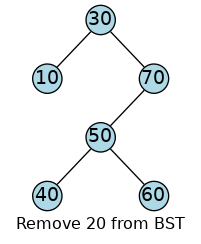
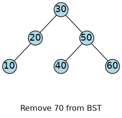
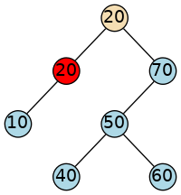
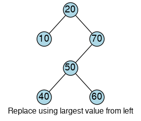
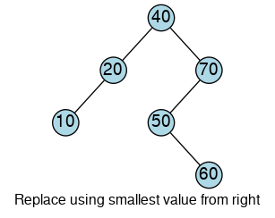

14.2. Binary Search Trees¶
A binary tree T is a binary search tree if, for each node n
with sub-trees left and right,
The value in
nis greater than the values in every node inleft.The value in
nis less than the values in every node inright.Both
leftandrightare binary search trees.
These assertions define the binary tree property.
Yes.
Each node is greater than or equal to all of its left descendants, and is less than or equal than all of its right descendants.
14.2.1. The Binary Search Tree ADT¶
Structurally, a BST contains pointers to it’s left and right children. As discussed in Recursion, a binary tree can be implemented simply as a recursive data structure. A binary search tree can also be implemented recursively.
It is a bit simpler to define the tree nodes as a separate type. Whether you design this class as a completely independent class, like this one, or implement it as a nested (inner) class, is largely a matter of choice.
Since a tree_node is a data structure that can exist independently
of a tree that enforces the binary search tree property,
it makes sense in this case to define it as a completely separate
struct with no invariants.
The tree_node encapsulates the general characteristics
common to all binary trees:
A variable to store the node value
Pointers to the left and right child nodes, which might themselves be sub-trees.
namespace mesa {
namespace tree {
// a binary tree node
template<class T>
struct tree_node {
T value;
tree_node<T>* left;
tree_node<T>* right;
tree_node(const T& value = T{},
tree_node<T>* left = nullptr,
tree_node<T>* right = nullptr)
: value{value}
, left{left}
, right{right}
{ }
};
} // end namespace tree
} // end namespace mesa
In other words, a tree_node is a general purpose
binary tree data structure and has no knowledge of
any binary search tree properties or behavior.
Binary Search Tree Traversal
One benefit of a binary search tree is that when the nodes are visited using infix traversal, the data is sorted ascending.
// write a tree to an output stream, infix
template <class T>
std::ostream& operator<< (std::ostream& os, const mesa::tree::tree_node<T>* node)
{
if (node == nullptr) return os;
os << node->left;
os << node->value << ' ';
os << node->right;
return os;
}
Notice we stream tree_node objects here,
not bstree objects.
Much like our earlier tree objects, all of the functions used to manipulate
a tree_node will be free functions.
To avoid collision with other similarly named functions,
all the functions will be defined in the mesa::tree namespace.
The binary search tree is built up from individual tree_node objects.
The bstree class has 1 private member variable: a pointer
to a tree_node.
The basic skeleton of the class should look familiar:
namespace mesa {
// a binary search tree
template<class T>
class bstree {
public:
typedef T value_type;
bstree() = default;
// convert a value into a tree
explicit
bstree(const T& value)
: root{new tree::tree_node<T>{value}}
{ }
// copy construct and assign
bstree(const bstree& other);
bstree& operator=(const bstree& other);
// move construct and assign
bstree(bstree&& other);
bstree& operator=(const bstree&& other);
constexpr
bool empty() const noexcept { return root == nullptr; }
private:
tree::tree_node<T>* root = nullptr;
};
} // end namespace mesa
Our primary focus for the rest of this section is on the functions that define the key operations associated with a BST:
contains and find
insert and erase
14.2.2. Searching binary trees¶
Efficient search of a binary tree uses the same algorithm
you would use when playing the ‘number guessing’ game.
If asked to guess a random number between 1 and 100 in the
fewest possible tries, with a hint higher or lower
after each attempt, few people would start at 1,
then guess 2, 3, and so on until they guessed correctly.
Most people would start with 50 and continue to split the
remaining unknown partition in half until they found the correct number.
The strategy most people apply to this problem intuitively is known as the binary search algorithm. This algorithm is easily applied to binary search trees.
We always search a binary search tree by comparing the value we’re searching for to the ‘current’ node value. If the target value is smaller, then we search the left subtree. If the target value is larger, then we search the right subtree.
If it is neither of these things, then we found the value.
This function is implemented as a mesa::tree free function.
template <class T>
bool contains (const T& query_value, tree_node<T>* node)
{
if(node == nullptr) return false;
if(query_value < node->value) {
return contains(query_value, node->left);
} else if(node->value < query_value) {
return contains(query_value, node->right);
}
return true;
}
14.2.3. Inserting into binary trees¶
Inserting into a binary tree means adding a new node in the tree such that the binary tree property remains intact.
The insert process begins with a search for a place to insert a new value. But how do we find the place at which to insert that new node? Ask “where would we go if we were searching for this data in the tree?” This process is identical to the search used for the contains function.
This function is implemented as a bstree member function.
tree::tree_node<T>*
insert (const T& value, tree::tree_node<T>*& node)
{
// add a new leaf
if(node == nullptr) {
node = new tree::tree_node<T>(value, nullptr, nullptr);
return node;
}
if(value < node->value) {
return insert(value, node->left);
} else if(node->value < value) {
return insert(value, node->right);
}
// else the value already exists in the tree
node->value = value;
return node;
}
There are a few important things to notice about this function.
The insert function receives the current node pointer as a reference to a pointer, It can change the value of the pointer provided. It does this specifically when our traversal brings us to a null pointer. A leaf node is place where we can insert a new tree node while still adhering to the binary search tree property.
Overwriting an existing value is a design choice. We could have chosen to do nothing and simply return the node.
Try This!
Walk through this algorithm yourself with different sets of values.
Experiment with inserting nodes into binary search trees. Take particular note of what happens if you insert data in ascending or descending order, as opposed to inserting unordered data.
14.2.4. Erasing binary tree nodes¶
The erase process also begins with a search for the place to erase. This process is identical to the search used for contains and insert.
The tricky part of removing a value from a binary search tree is what to do when we actually find the value we want to delete. We can’t just delete the tree node. Consider the following tree.
If we remove values 10, 40, or 60
by simply deleting the tree node, that might work.
However, deleting any other node would break the links between tree nodes.
We have 3 cases to consider:
Removing a leaf
Removing a node that has only one child
only a left child
only a right child
Removing a node that has two children
14.2.4.1. Removing a leaf node¶
It’s easy to see that we can always remove any leaf in a binary search tree without affecting anything else. That is, if we remove any leaf from a binary search tree, we still have a valid binary search tree. There is nothing else to do.
When node points to a leaf that contains the data we want to remove
we replace the address in node by node->right.
If node is pointing to a leaf, then node->right is null
and we write a nullptr into the parent node,
replacing whichever of its two children pointers was used to get to node.
In other words, leaf nodes are replaced with the null pointer.
14.2.4.2. Removing a non-leaf node with a null child¶
Removing nodes from the interior of the tree is a bit more work as we need to maintain links between nodes.
Given the same tree we have been working with so far:
Question
Suppose we wanted to remove the 20 or the 70 from this tree.
What would we have to do so that the
remaining nodes would still be a valid BST?
There is one pointer to the node being deleted, and one pointer from that node to its only child.
So this is actually a bit like deleting a node from the middle of a linked list.
All we need to do is to update the pointer from the
parent 30 node.
That pointer should point to the child of the node we are going to remove.
Verify that if we remove either 20 or 70,
the resulting tree is still a valid binary search tree.

|

|
The code we used to remove a leaf also works when there is only one child.
If we reach this code, we know there is at most one non-null child. In the previous case of a leaf node, both children are null, but the same code works for one child also.
If the left child is not null, then reassign the left child to the current node, otherwise assign the right child.
14.2.4.3. Removing a non-leaf node with a two children¶
Suppose we wanted to remove the 50 or the 30 from this tree.
What must we do so that the remaining nodes would still be a valid BST?
This is a hard case.
If we remove either the 50 or 30 nodes,
then we break the tree into pieces,
with no obvious place to put the now-detached subtrees.
There is an efficient solution to this problem. Instead of deleting the node when we find it, is there some other data value that we could put into that node that would preserve the BST property?
There are, in fact, two values that we could safely put in there:
the smallest value from the right subtree
the largest value from the left subtree
We can find the largest value on the left by
taking one step to the left
then running as far down to the right as we can go
We can find the smallest value on the right by
taking one step to the right
then running as far down to the left as we can go

|
 |
At this point, we haven’t deleted or created any nodes.
We simply copy a value from one node to another.
Now we have two nodes in our tree with the same value,
either 20 or 40,
depending on which approach we used.
We still need to delete the smallest right node or the largest left node. What makes this last step simple is that it falls under our previous case: it is by definition either a leaf, or has at most one child.

|

|
Putting it all together.
This function is implemented as a mesa::tree free function.
1 2 3 4 5 6 7 8 9 10 11 12 13 14 15 16 17 18 19 20 21 22 | template <class T>
void erase (const T& value, tree_node<T>*& node)
{
if(node == nullptr ) return;
if(value < node->value) {
return erase(value, node->left);
} else if(node->value < value) {
return erase(value, node->right);
} else if(node->left != nullptr && node->right != nullptr ) {
// two children
// replace node with smallest value from right subtree
node->value = min_element(node->right)->value;
return erase(node->value, node->right);
} else {
// remove a leaf node or node w/ 1 subtree
tree_node<T>* trash = node;
node = (node->left != nullptr ) ? node->left : node->right;
delete trash;
}
}
|
Lines 6-9 handle the search we discussed initially. Here we recursive search for our target value to remove.
The else if block handles the case with 2 children.
We find the smallest node in the right subtree
and assign it’s value to the current node.
Then we erase this value from the right subtree
of the current node.
The final else block handles the leaf and the one child cases.
This is the only case where a node is actually removed from the tree.
This block will also untilately get called when the
case handling two child nodes needs to delete the
smallest value from the right subtree.
More to Explore
The content on this page was adapted from Binary Search Trees, by Steven J. Zeil for his data structures course CS361.
Wikipedia